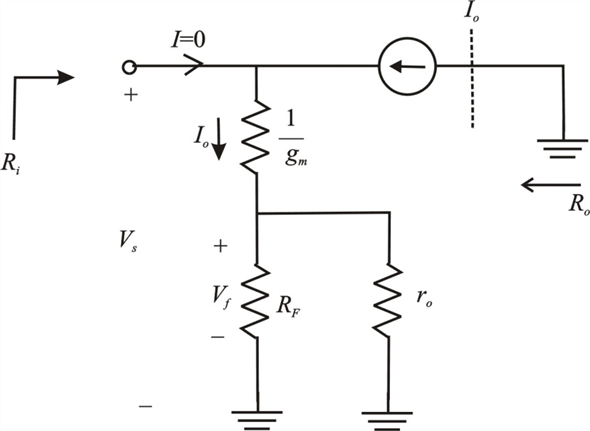
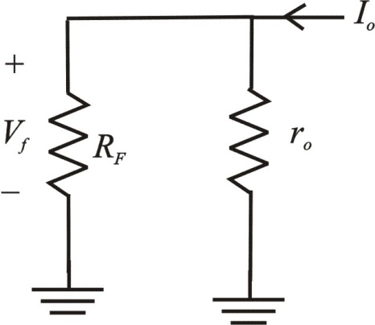

Step 1:
(a)
Refer to the circuit diagram of trans-conductance amplifier in Figure P10.46 in the textbook.
The small signal equivalent circuit is shown in Figure 1.

Figure 1
The trans-conductance amplifier circuit with input  and the output
and the output  .
.
When the input voltage,  increases, the output current
increases, the output current  also increases. Thus the feedback circuit is composed of resistor,
also increases. Thus the feedback circuit is composed of resistor,  .
.
Step 2:
(b)
The A circuit is shown in Figure 1.
The  circuit is shown in Figure 2.
circuit is shown in Figure 2.

Figure 2
Step 3:
(c)
Calculate the gain of the circuit.
Thus, the gain of the amplifier circuit  is .
is .
Step 4:
Calculate the value of feedback factor.
Thus, the feedback factor of the amplifier  is .
is .
Step 5:
Calculate the value of  .
.
Thus, the value of  is .
is .
Step 6:
Calculate the feed-back factor.
Thus, the feedback factor  is .
is .
The output resistance of the amplifier  is .
is .
The feedback resistance of the amplifier  is .
is .